AI harness · In progress
Project #1
One control center that runs a team of AI agents safely.
License · $250KLicense
Finance leader · systems builder · open to roles and consulting
Automation, dashboards and AI agents that cut cost, remove manual work and keep you audit-ready. Twenty years in finance, operations and software.
Development
16h → 3h a monthly task, automated
SaaS, process automation, data lakes and dashboards built to your process.
See developmentFinance
90 → 30 days to get reimbursed
Budgeting, forecasting, cash flow and funding strategy, run on clean data.
See financeCompliance
100% of audits passed, GE and P&G sites
Internal controls, audit readiness, grant compliance and security built in.
See complianceEducation
180+ students tutored in data
Python, SQL, Excel and AI, taught so the system outlives the project.
See educationAgent skill · Claude Code
A wall of agent output becomes one next step.
Say STATUS and the agent sweeps the whole session, catches what was forgotten and answers with one small table and one action you can run.
Agent skill · Claude Code
A full disk, emptied without losing a thing.
It measures first, ranks what fills the disk with a plain "need it?" answer, and hands you one step at a time. Nothing is deleted without your OK.

Creativity · plug-in development
Build on top of what already works.
A playful experiment with a serious method: find the gap in a product that already works and add the feature with a small, tested plug-in. Here, LinkedIn messages that self-destruct into 💬💣💨. The same approach fits any tool your team uses: CRM, ERP, support desk, internal portal.
Browser game · MVP in a day
Idea to playable demo in one day.
A Bible trivia game for kids 5 to 10 about the seven days of Creation, in English and Spanish with read-aloud. Built as a fast MVP to test the idea with real families before the full adventure game.
Products I am building now, kept private until launch. Each one is for sale; no source code is published.
AI harness · In progress
One control center that runs a team of AI agents safely.
License · $250KLicense
Software delivery · In progress
An agent-run line that builds, tests and ships software, with a human sign-off.
$50KBuy
Research · In progress
A research tool that checks every citation.
$50KBuy
Developer tools · In progress
A code reviewer that proves each finding.
$50KBuy
Games · In progress
A historical strategy game.
$50KBuy
Home services · In progress
A marketplace for homes and vetted service pros.
$50KBuy
Consulting
Creative plug-in development: I find the gap in the software your team already uses (CRM, ERP, support desk, portal) and add the missing feature as a small, tested, private-by-design extension. Proof of craft: LKND Ghost Text.
Hiring
Director, controller or FP&A roles where finance also owns the systems: automation, data and reporting. Remote or Vermont, USA.
Consulting
I map where your team loses hours, then build the automation, data pipeline or custom dashboard that gives them back.
Consulting
Agent skills and workflows built for your process, with evals, signed releases and security checks.
Tell me what eats your team's time. I'll tell you how I'd automate it, measure it and prove it works.